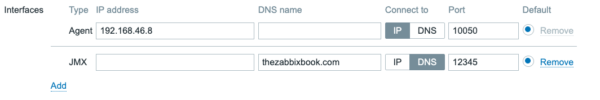
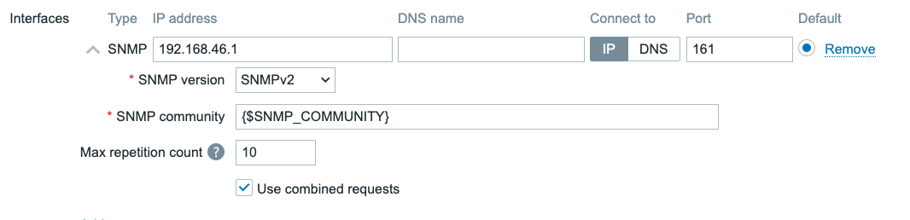
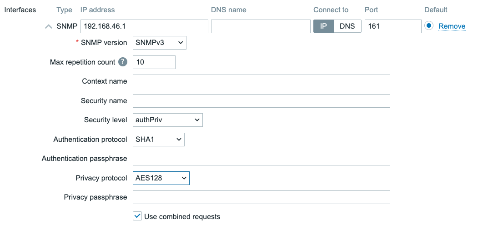
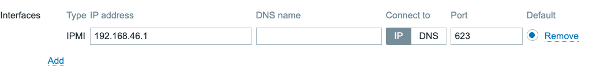
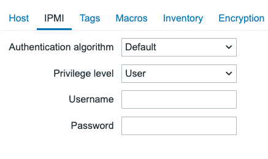

Host Interfaces
When we create a host in Zabbix, we have the option to create Host interfaces.
You might have noticed this in the previous chapter already when you created a
host or when you added the simple check.
Host interfaces in Zabbix are used to define a remote monitoring target. We define
the IP address or DNS name as well as the Port that we want our Zabbix server
(or proxy) to connect to when collecting our monitoring information. There are
three types of interfaces.
- Agent (or ZBX)
- SNMP
- JMX
- IPMI
These interface types are tied directly to the items types. Meaning that when you want to monitoring the Zabbix agent (passive) you will need a ZBX (agent) type interface. If you do not have the correct interface, you will not be able to add the items for monitoring.
- Agent (or ZBX) is used by Zabbix agent items
- SNMP is used by SNMP agent and SNMP trap items
- JMX is used by JMX agent items
- IPMI is used by IPMI agent items
Besides these matches, there are also various items like the Simple check items
that can use all four interface types. These items will then only use the interface
IP or DNS to connect to the remote monitoring target.
Agent/ZBX and JMX
The Zabbix agent type interface and JMX interface work quite similarly. Both interface types allow us to define four things.
 4.9 Agent and JMX type interfaces
- IP address
- DNS name
- Connect to (IP or DNS)
- Port
It's important to take note of the Connect to field here. It indicates whether
we will use the IP address or DNS name field configured for this interface.
Within Zabbix interfaces it is only possible to use one at the time. That means
there is no failover if DNS starts to fail and as such when using DNS your monitoring
will be dependent on your DNS servers.
Tip
The question often asked at this point is "Should I use DNS or IP". The choice in the end is up to the Zabbix administrator, but a simple rule we always follow is:
If it's static use IP, as your monitoring will keep working even if DNS is down. If it's dynamic, use DNS as you will save yourself the administrative overhead.
SNMP
The SNMP interface has the most options of all four interface types. The reason for this is because the SNMP type interface allows us to specify the SNMP details like version, community and credentials.
 4.10 SNMPv2 interface
When selecting the SNMP version as either SNMPv1 or SNMPv2, we are shown
the SNMP community field. SNMPv1 and SNMPv2 both use unauthenticated and
unencrypted connections by using a plain text SNMP community to initiate a connection
to the SNMP monitoring target like a switch or a router. This `SNMP community is
sent over the network in plain text and as such it can not be seen as fully secure
authentication.
All three SNMP versions will also show the Use combined requests checkbox.
When selected, Zabbix will group multiple SNMP items into a single request to
improve performance. For some older SNMP devices this can cause some issues and
in those cases it might be needed to turn the checkbox off.
Additionally when selecting SNMPv2 or SNMPv3 we are also presented with the
Max repetition count. When Zabbix uses GETBULK requests it will retrieve multiple
values per OID base in a single call. This option is used to reduce SNMP traffic
overhead when using the walk[] SNMP agent item key.
 4.11 SNMPv3 interface
For SNMPv3 many additional fields will be available for configuration.
- Context name Used to define a context, for example when connecting to a single device split up in multiple virtual devices (like a virtual router)
- Security name The username we will use when authenticating to our SNMP monitoring target
- Security level noAuthNoPriv, AuthNoPriv, AuthPriv. We can choose to do SNMPv3 without authentication and data encryption, with authentication and without data encryption or with both authentication and data encryption.
- Authentication protocol MD5, SHA1, SHA224, SHA256, SHA384, SHA512. The encryption strength for our authentication.
- Authentication passphrase The password for authentication.
- Privacy protocol DES, AES128, AES192, AES256, AES192C, AES256C. The encryption strength for our data encryption.
- Privacy passphrase The password for data encryption.
With SNMPv3 it is important to keep security in mind. SNMPv1 and SNMPv2 should
be considered obsolete at this point, providing potential bad actors with access
to important information or worse write access to devices without authentication.
SNMPv3 with authentication and data encryption is as such always recommended.
It's up to the Zabbix administrator to determine what the monitoring target supports,
but higher security is better in this case.
noAuthNoPriv utilizes the SNMPv3 protocol without authenticating and encrypting the data.
AuthNoPriv uses encrypted authentication, but sends monitoring data plain text over the network
AuthPriv is the recommended method for high security, as it uses encrypted authentication and also sends monitoring data encrypted over the network.
When using SNMPv3 it is also best practice to use a strong authentication protocol. MD5 and DES are both no longer recommended due to the possibility to brute force the passwords with consumer grade hardware amongst other risks. That's why SHA1 and AES128 or higher is always recommended.
IPMI
For IPMI agent type items we want to add the IPMI type interface. We can use it to connect to BMC's (Baseboard Management Controller) like iDRAC and iLo. This interface is slightly different again from the previous three interfaces.
 4.12 IPMI interface
We have the same settings for IP, DNS and Port again, but in the case of IPMI we do not define credentials on the interface level. Instead these are provided on a different tab on the host configuration settings.
 4.13 IPMI host settings
For a host in Zabbix we can only define one IPMI use for authentication, regardless of the amount of interfaces we add.
- Authentication algorithm None, MD2, MD5, Straight, OEM, RMCP+. Determines the encryption strength.
- Privilege level Callback, User, Operator, Admin, OEM. Determines the privilege level our user should be allowed to connect with.
- Username The username to authenticate with.
- Password The password to authenticate with.
Once again, for security purposes MD2 and MD5 are not recommended. As well as Straight which is plain text unencrypted and OEM which is vendor specific. If possible, try to use RMCP+, which in most cases is the most secure.
For the Privilege level it is recommended to use either Callback or User in most scenarios. Callback will allow us to access alerts, User will also allow us to access monitoring data. If need higher privilege levels to execute commands on the BMC as well, this is possible. But keep in mind, write access from your monitoring system comes with additional security risks.
Interface availability
All four interface types, also come with an icon that can turn Green, Orange, Red or Grey. This color determines the interface its availability.
... ... ...
Conclusion
When configuring your host interfaces in Zabbix, we need to match our Item type to our Interface type. When we have the correct Host interface configured we will be able to add the corresponding Items on our host to collect data. Upon successful data collection, the interface availability icon will also turn Green.
Some item types like the Simple check also have the possibility to use host interfaces, but do not need them. These items, although they use the interface, do not have an affect on interface availability and the availability icon.
When configuring host interfaces with security settings, keep in mind to use the most secure option that your monitoring target supports. This will make sure your Zabbix environment is more secure, even if a bad actor would be present on your network somehow.